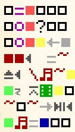
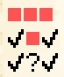
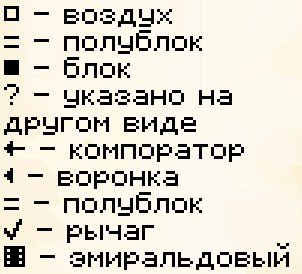
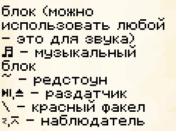

Выпуск №3 на 7 сезоне
{kind=link}
Оглавление
5. Рубрика "Редстоун" Казино на все случаи жизни
16. Рубрика "Факты"
Топ 5 фактов о майнкрафте Топ 5 фактов о майнкрафте
25. Рубрика "Исследование" Джунглевый храм
Рубрика "Редстоун"
Казино на все случаи жизни
Идея для рубрики: Borza
Внимание, это не подробное пособие по строительству, я не редстоунер и у меня в штате нет Евилема для этой рубрики. Всё далее чистый развлекательный контент
Это был кликбейт. Казино не на все случаи жизни. Вообще, не играйте в казино.
А теперь перейдём к самому механизму. Он представляет собой игровой автомат. Механизм компактный, а значит если вы хотите заработать на азартных игроках, но не знаете как это сделать вам он... не подойдёт.
Принцип работы прост. Вы кидаете алмаз в бочку и он либо вам возвращается, либо нет.
Дело в том, что схема для постройки должна умещаться на одну, максимум две страницы, тот механизм который я нашёл максимально компактный, но схема всё равно очень сложная. А теперь представьте, что если бы я пытался объяснить механизм больше чем в 1-2 блока
Хватит воду лить, я уже хочу показать на что я потратил 10 минут:
{kind=link}
Вид спереди:
{kind=link}
Знаки:
(все стрелки указывает в сторону, куда смотрит блок)
 {kind=link}
{kind=link}
Если что-то не понятно, посмотрите ролик rexxstone - Tiny & Easy Slot Machine | Minecraft Java & Bedrock 1.19 Redstone Tutorial
А теперь как построить эту штуку. Расскажу основные моменты
Основные моменты:
Есть сортировка вещей, так что выбирайте правильный мир (тот, который разрешает авто-сортировку)
В самом нижнем раздатчике раздатчике следующие вещи: 4 лопаты, 5 разных блоков
Подведём итоги. Мы получили сложную инструкцию и странный автомат, но зато теперь вы сможете играть в казино на сервере пепеленд абсолютно не боясь, что ваши алмазы уйдут злому владельцу этого казино! Вам не прийдётся объяснять ему кто он такой!
Внимание, не играйте в казино, чаще всего это просто вытаскивание денег из людей
Рубрика "Факты"
Топ 5 фактов о майнкрафте
Я попытался найти в интернете самые интересные факты про нашу любимую игру.
Надеюсь, вам понравится эти факты, а некоторые возможно даже удивят
Факт 1. Херобрин был удалён.
Что? Херобрин существовал? Я растрою вас, скорее всего это была шутка от Нотча.
В обновлении к примечанию к патчу 1.6.6 в самом конце списка нововведений и изменений был текст: "- Removed Herobrine" (Херобрин удалён). Как мы знаем, херобрина не существует, а значит это точно обычная шутка от Нотча.
Факт 2. Игра была создана всего за 6 дней
Маркус Персон (Нотч) Создал игру всего за 6 дней и опубликовал её на форуме TigSource. Не удивительно, ведь в той версии игры было всего два блока - булыжник и дёрн. Персонаж мог только бегать и вызывать нпс возможности которых не превышали возможностей игроков. Разве что не могли спавнить себе подобных.
Факт 3. Верхушка пирамиды идеально подходит для маяка
Видимо Моджанг хотели объяснить игрокам, что они могут создать маяк.
Не понятно только как игроки должны понять, что им нужно заполнить эту пирамиду блоками и поставить на верх блок с названием "Маяк", который светит только если возвести ему пирамиду...
Факт 4. Дебаг Мод
Да, это довольно распространённый факт, но мне уже нечего писать.
Дебаг мод - это специальный вид мира для теста всего связанного с блоками
Думаю, что дебаг мод может подойти тем, кто создаёт текстурпаки, а возможно его используют сами разработчики для тестирования своих приколов.
Факт 5. Котлы
Изначально, в beta 1.9 зелья должны были вариться в котлах. Выглядело это как крашенная вода в бедроке, но только с более непрозрачной текстурой.
Рубрика "Исследование"
Джунглевый храм
Эту структуру встречали многие, но многие ли знают его историю? Многие ли проходили головоломку вместо того, чтобы просто сломать блоки?
История
Впервые джунглевый храм появляется в версии 1.3.1 (12w22a). С тех пор он не сильно изменился.
Описание
Джунглевый храм состоит из трёх этажей. Наземные уровни довольно обычные, а под землёй всё более интересно. Там есть два сундука (железо, золото, иногда даже алмазы или что-то бесполезное)
Второй сундук располагается в комнате, в которую можно попасть только если открыть её, пройдя головоломку из рычагов (ну или сломав пару блоков tf).
Лут
Драгоценного больше чем бесполезного, но вам может попасться больше ерунды чем драгоценных предметов: золото, алмаз, седло и изумруд. Может быть ещё зачарованная книжка. Конская броня из железа, золота, алмазов.
Из хлама: кость, гнилая плоть, бамбук
Литературный клуб имени Дарьи Донцовой.
Автор текстов: Whu00
Большая часть информации была взята с сайта minecraft.fandom.com
Литературный клуб находится в мп2 по координатам 20 ~ -662*
* Координаты с 7 Пепеленда.